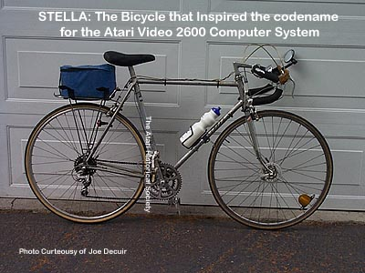
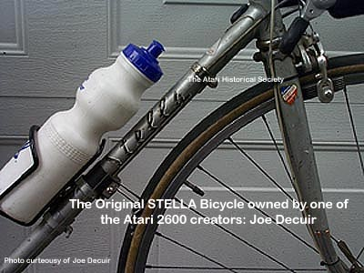

Many people familiar with Atari are aware of the stories of Atari products
being codenamed after females who worked for Atari. The Atari
400 was codenamed Candy, the Atari 800 was codenamed Colleen, the Atari
5200 was codenamed PAM and there are many other codenames for other Atari
products. One product in particular, Atari's most popular and
the worlds most famous video game console the Atari 2600 Video Computer
System was not named after an Atari female, but instead after one of the
original engineers bicycle.

